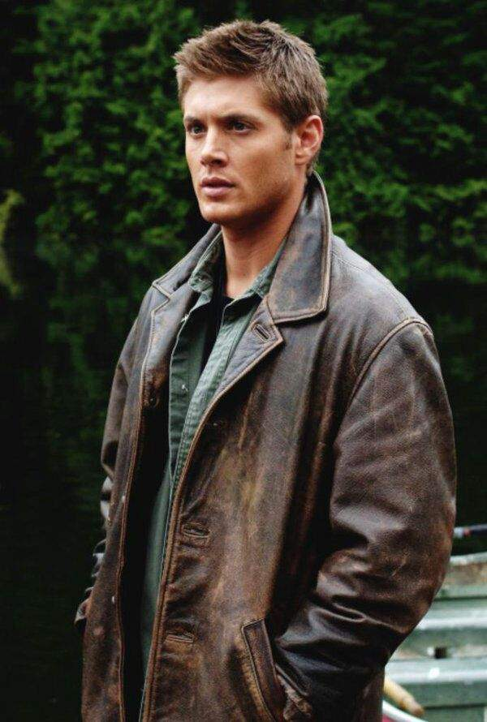

 Дин Винчестер родился 24 января 1979 года в семье Джона и Мэри Винчестер. Он был назван в честь своей бабушки по материнской линии — Дианы Кэмпбелл. Дин был первым ребёнком в семье, он старше своего родного брата Сэма на четыре года, а единокровного брата Адама — на 11 лет. В отличие от Сэма, Дин очень глубок и естественен. За ним не стоят секреты от брата, желание изменить свою жизнь, он просто живёт как дано ему на этом свете. У него было много непродолжительных связей с женщинами, но действительно серьёзные отношения завязались только с Лизой Брейден. Дин жил с Лизой и её сыном Беном в течение года и считал их своей семьёй.
Спасатели
Чип, Дейл, Гайка, Рокфор, Вжик
Злодеи
Толстопуз, Профессор Нимнул
Чип и Дейл спешат на помощь
О мультфильме
Чип и Дейл спешат на помощь (англ. Chip 'n Dale Rescue Rangers) — мультфильм, который начал выходить в эфир в США с 4 марта 1989 года. Последняя серия была показана 19 ноября 1990 года,но официально он закончился в 1992. Это мультфильм про спасателей, дружбу и победу добра над злом.
Персонажи
Чип: командир спасателей.
Дейл: весельчак, лентяй.
Гайка: мышка, которая разбирается в инструментах лучше всех и управляет вертолётом спасателей.
Рокфор: Всё забывает и идёт к нему по опасному пути со словам: «Сыр!» Это его слабость.
Вжик:самый маленький из спасателей, это просто муха.
История
Спасатели объединились в команду в течение первых пяти серий мультфильма, серий про похищенный рубин. В первой серии были только Чип и Дейл. Во второй серии к ним присоединились Рокфор и Вжик, а в третей — Гайка. Теперь они вместе подвергают себя многим опасностям, чтобы спасать людей или животных.
В оригинале
Тип
Кол-во сезонов
3 сезона 65 серии